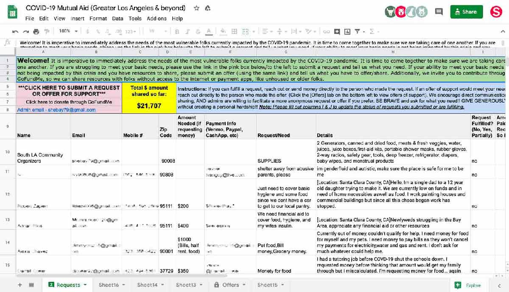
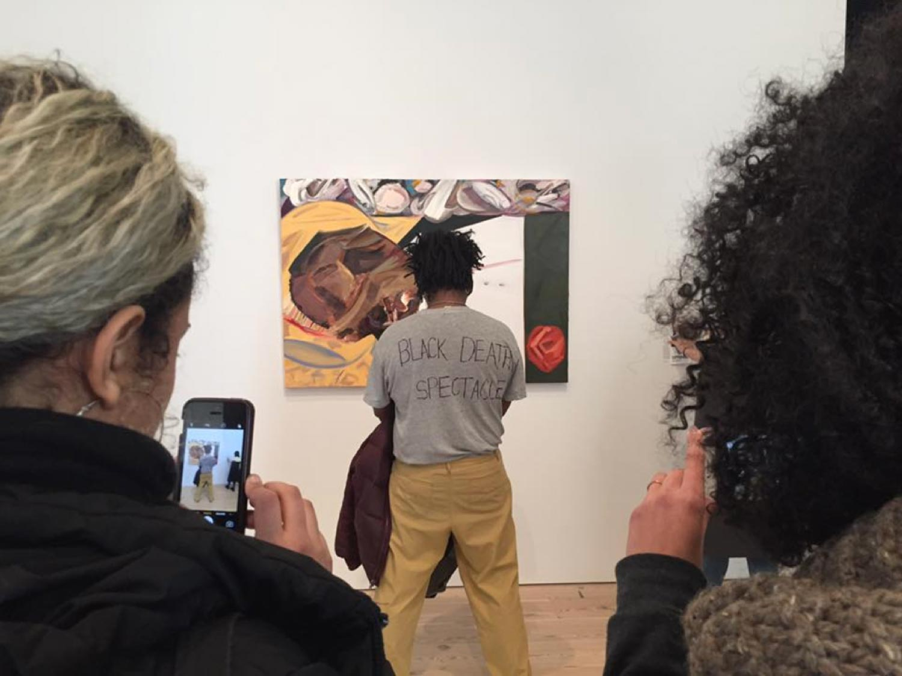
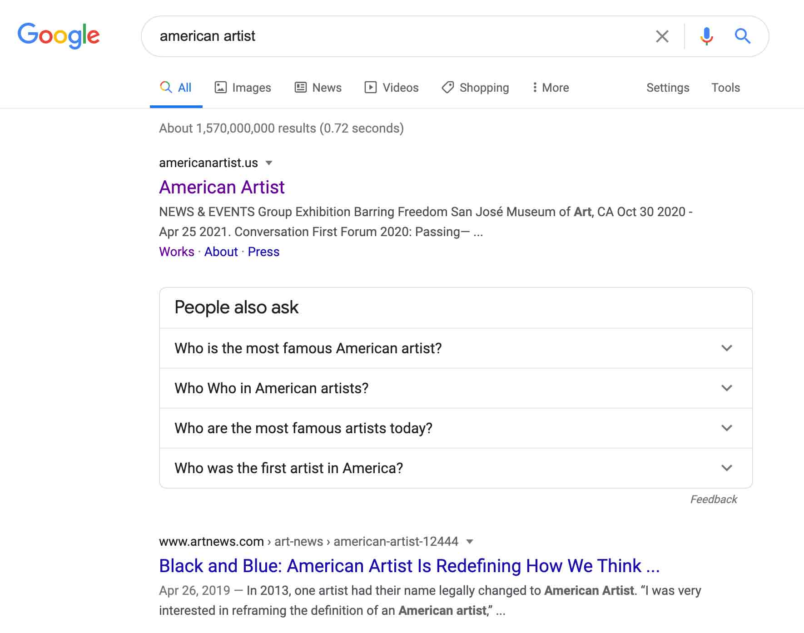

Publishing is political. Publishing can compel, persuade, inform, attract, confuse, script, or manipulate. Urgent acts of “making public” can mobilize communities and inspire change in real time. In crisis, we see independent artists, community organizers, scholars, and activists collectively engaging with sophisticated modes of publishing to record and communicate in real time, while those in traditional positions of power use those same tools to engineer and control our defining narratives. It’s here that we can locate the enormous paradox of contemporary publishing: its potential to oppress as well as to empower.
From Facebook posts to presidential tweets, from dance-based memes to print-on-demand journals to mutual aid zines, stories are constructed and experiences shared across networks. How and why they reach us and why we’re compelled to trust them—or not—is crucial to any understanding of how publishing operates right now.
Publics consume and amplify, and sometimes resist and refuse, those defining narratives.
This syllabus focuses in particular on those queer strategies of resistance and survival. As an overarching idea, urgentcraft explores the potential for radical publishing to gather and mobilize people around urgent artifacts and messages. As a syllabus, urgentcraft presents a range of artists, projects, texts, and concepts that foreground those strategies in recent history, as well as in contemporary independent publishing. As an expanding set of principles, urgentcraft identifies anti-racist ways of working in crisis, using art and design to fuel emancipatory projects and the movement towards liberation.
1
MAKING PUBLIC
Publishing is more than making a book. Publishing is more than the artistic, commercial, and academic worlds that are commonly known as the publishing “industry.”
Today, publishing is personal and everyday. It’s the intimacy of communication over networks. It’s the fundamental act of making public.

Community bulletin board, Taiwan
I come back to this image of a community bulletin board again and again as a basic and banal example of making public. Is this publishing? I propose that it is—selecting something to amplify, and posting that information in public to give it an audience.

Mario Savio, leader of the Berkeley Free Speech Movement, speaks to assembled students on the campus at the University of California, Berkeley, on Dec. 7, 1964 (Robert W. Klein/AP)
What about this? Is this publishing? It’s certainly making public, but less about posting something and more about performing for a very specific audience. It brings up the idea of addressivity. In this notion of “the public,” everyone isn’t included—only those who have gathered in time and space to listen. This image asks me to look closely at what I mean by public. When we speak, who’s listening?
IF I DIE OF AIDS - FORGET BURIAL - JUST DROP MY BODY ON THE STEPS OF THE F.D.A., jacket worn by David Wojnarowicz (September 14, 1954–July 22, 1992), ACT UP demonstration, Food and Drug Administration, Washington, D.C., October 11, 1988. Photo by Bill Dobbs.
Is this jacket an act of publishing? More on the jacket below. This kind of making public interests me deeply.

American Artist, streaming performance, March 20, 2020
As do these newer forms of making public that are temporal, sometimes durational, and almost always ephemeral. I love stretching the idea of publishing into these slippery places.

R.I.S.E. Indigenous, April 5, 2020
These are forms that are super familiar to us now. Platforms that have become places for us to publish on a daily basis, with access to and direct engagement with vast audiences.
CAPTION
For the artist publisher, an ordinary table at an art book fair is another platform, allowing them to be on one side and their public on the other. Direct engagement over the published material, in physical space.
2
GESTURES OF PUBLISHING
CAPTION
I’m borrowing these ideas from social theorist Michael Warner, who wrote about publics in his text “Publics and Counterpublics.” I come back to this dense reading again and again. When I teach it I usually re-read it with students to try to get a little bit further with it each time.
In this text Warner makes distinctions between the public, or “everyone out there,” and a very specific public—say, those particular people who have gathered intentionally around something. In “Publics and Counterpublics” Warner gives us the concept of a plurality of publics. Multiple publics.

Warner says that to publish is not just to “make public,” but to make a public through the circulation of material. A public gathers around the work as it circulates and generates discourse, and only then has a public formed.
CAPTION
Previously, we may have thought about publishing as the production of objects: things that one makes, like books, zines, and digital files.
Warner turns this around. He writes that publishing is less about the objects you make, and more about the actions you take. Your publics form around these actions, through the dispersion of material. Seth Price writes about this too. As an act of “distribution, rather than production,” it’s easy to consider artistic publishing in gestural terms, or as a performance.

CAPTION
This is why I’m so intrigued by acts of performative publishing like live streaming, or posting digital files that are meant to be downloaded. In The Download, a series of commissioned works for Rhizome, artists created works contained entirely within ZIP files.
CAPTION
The act of publishing can be located right there in the uploading and downloading of the files, the private performance of these files on a viewer’s desktop, and the circulation of these files on the network. It’s all about movement.
CAPTION
There’s an entire world of net art that approaches publishing in this way, in the realm of digital files that circulate from server to server, device to device. Rhizome’s Net Art Anthology indexes the history of net art, and is an invaluable resource for understanding how artists have located their work on digital networks during the last forty years.
CAPTION
The project is documented online and in this beautiful book. It includes “The Post as Medium,” which traces a history of the post as a gesture of publishing.
Posting is an essential act of publishing, perhaps its oldest. By act I mean posting a photo or tweet, or making a blog post. If we consider a deeper history of the word post, there’s little information to be found.
3
POSTING
CAPTION
But we can try to trace the word post back through time within other words that contain the gesture of posting, like “poster.” The poster is a basic form that carries within it the act of displaying its contents on a vertical surface, usually in public space. The poster’s origins are thousands of years old, or even older, if we consider the very first marks made by humans on walls. Posting is a foundational gesture.
CAPTION
But what about language like “keep me posted,” or “post office,” or “the daily post?” Without much scholarly research, it’s been suggested that “posting the news” comes from the figure of the town crier. He would read the news out loud at the center of town, for the benefit of a probably illiterate audience. When he was finished announcing the news, he would nail it to a door post as evidence of it having been heard, and so—the news was posted.
CAPTION
There is a rich history of artists who have used the very basic gesture of posting in public space in order to announce something or give access to information, and engage with a more expanded audience. From Jenny Holzer’s Truisms in the 1970s,
CAPTION
to Stephanie Syjuco’s more recent use of the casual flier as a way to distribute URLs for downloading free PDFs,
CAPTION
to Demian DinéYazhi´, who positioned these potent letterpress prints in a storefront window facing a statue of an indigenous figure in St. Louis, Missouri,

CAPTION
and Zoe Leonard’s publishing of the statement “I want a dyke for president” early in the 1990s in support of the poet Eileen Myles, who was running for US president, and then again during the 2016 US presidential election, shown here as a gigantic poster installed on the High Line in New York City,
CAPTION
to Julia Weist’s use of a billboard to amplify a made-up word—a fascinating, complicated project that’s worth digging into.
4
STACKING

CAPTION
Beyond the post, I propose a few other gestures of publishing, like stacking.
CAPTION
Like posting, stacking is basic. It brings to mind one of the most common ways to distribute printed material in public space: using gravity. If it’s not hanging up or posted on a wall, it’s probably sitting flat, stacked on a horizontal surface somewhere, like at a newsstand, or a bookstore, or an art book fair.
CAPTION
One can simply set up a table (or set down a blanket) as a way to display stacks of material in public. While posting doesn’t always invite a reciprocal gesture, stacking is a clear invitation to take. The new project Library of Study, located in Brooklyn, curates books around an abolitionist theme and places them on a table in public space, inviting discussion and borrowing.
CAPTION
Individual prints can be stacked on the floor, as Edson Chagas did at the Venice Biennale in 2013.
CAPTION
The artist Felix Gonzalez-Torres used the stack as a sculptural form in itself. The stack as medium.
CAPTION
Felix’s stacks are unlimited, with detailed instructions about their constant replenishment. His stack works dismantle the monumentality of sculptural form; the sculpture here is no longer a single, unique object, but rather an act of publishing that’s always disappearing and re-forming itself.
CAPTION
I’ve only been able to find one good text on stacks: “The Ethos of the Edition,” by Susan Tallman, who writes specifically about the stacks of Felix Gonzalez-Torres, and how he resists traditional notions of power by distributing his work in unlimited editions, more akin to a publishing model rather than an art market one.
5
DROPPING
CAPTION
Dropping is another publishing gesture.
CAPTION
Dropping is much less common, but we know about it from images like this one, which are really associated with propaganda and the state. The idea of forcing an act of publishing onto a territory.
CAPTION
These images display dropping as an imperial tactic—the author comes from above to impose a message, dropping it onto the land.
https://www.nytimes.com/2019/02/09/arts/protesters-guggenheim-sackler.html
Dropping is also used as a protest tactic, as seen here at the Guggenheim Museum on February 9, 2019. Protestors dropped leaflets designed to look like prescriptions, in response to the museum’s ties to the Sackler family and the OxyContin opioid crisis.

CAPTION
But dropping is also the language we use to talk about transferring digital files.
CAPTION
We know dropping in a more everyday way like this: the act of publishing or sharing between devices, visualized as passing files through the air and dropping them into a specific location. As well as “dropping an album.” Dropping in this sense is associated with convenience and direct, immediate access.
CAPTION
Using those same terms, this is dropping, too. Books are dropped off at a specific location, to be picked up in a direct way. This kind of dropping can almost feel intimate, especially during pandemic times, because of the physical act of touching materials and placing them in boxes in residential neighborhoods.
CAPTION
Anastasia Kubrak has a project that mixes together many of these ideas, where state-censored documents are printed and left at specially-marked drop points in the city of Moscow. The secret drop-off sites are identified by an “X” in a box.
CAPTION
Aram Bartholl’s Dead Drops project is a vast network of USB drives embedded in architectural surfaces, usually located (illicitly) in public space. The project really functions like an offline network for the distribution of digital material, totally independent from the internet. I suspect networks like this one will eventually devolve out of use, as technology formats change.
6
FEEDS AND STREAMS
CAPTION
One more publishing gesture is streaming, or rather: feeds and streams. Individual posts are rarely encountered on their own; they accumulate into feeds. The feed is experienced as a never-ending flow of posts. I think this is one of the most important ways to think about publishing today: the feeds we surround ourselves with, that we’re comforted by, and that we nurture and take care of. Our current notion of feeds began with the evolution of blogs in the late 90s, but exploded in popularity after the launch of the Facebook wall feature in 2004 and the launch of Twitter in 2006, Tumblr in 2007, and Instagram in 2010.
https://www.youtube.com/watch?v=3dh_BZPxveY
If accumulating posts are a feed, then the non-stop feed is a stream. Streaming is now an entire economy, with streamers performing live on Youtube and Twitch and Tiktok and sharing in advertising profits. This is fundamentally different from the 20th-century model of broadcasting; platforms are easily accessible in exchange for data, which is extracted by enormous tech corporations for prediction and profit.
CAPTION
Although the feed feels relatively recent, it’s actually been around since the 19th century; it’s a product of the industrial revolution. I find the first references to the feed as a flow of information in the early 1840s, around the invention of the telegraph. Photography also appears for the first time at exactly this moment. The feed continues to evolve as networked communication and information transmission advances throughout the 20th-century (think: radio, television and the “live feed.”
CAPTION
But this is what our feeds are quickly evolving into today, in late-stage capitalism. The interface is dematerializing; we no longer see the feed or recognize it as an accumulation of posts. Rather, we experience it and feel it like an ambient presence. A device like this one is still engineered to operate via a series of inquiries and responses that are “posted” back and forth. But the experience is much smoother than that. It’s no longer an interface of buttons and boxes, but of smooth, natural language.
7
ULTIMATE SMOOTH FLOW
CAPTION
For the first time, I think the distinctions between what is or is not publishing are becoming ambiguous and blurry.
CAPTION
As we engage with non-stop streaming in a totalizing way, throughout all of our environments, we’re seeing this collision and collapse between publishing, digital networks, and surveillance.
CAPTION
And this blurriness isn’t going anywhere. It’s becoming more and more ubiquitous and accepted. It’s a desire that we seem to have right now, as a society, to protect ourselves with these networks of seeing and listening, and the ideologies of profit and power that go along with them.
CAPTION
It’s crucial that we try to understand how this all works. The politics of our platforms. How the same streaming, always-on platforms that enable us to publish and communicate and entertain and protect and isolate ourselves—
CAPTION
are the very same platforms being used by capitalism to profit and to persist, and by state institutions to surveil, to minoritize, and to criminalize.
CAPTION
It’s the ultimate smooth flow of interfaces that know us and envelope us now that I’m most concerned about. Not because I don’t enjoy them—but because I do. As designers, we find ourselves in a very particular contradiction here. How do we participate in this? How do we teach design within this framework? How do we continue to design these most perfect interfaces, knowing what we do?
CAPTION
These are questions for each of us to wrestle with, as students, as working designers, as anyone invested in how design functions in our political state right now.
8
RESISTING THE SMOOTHNESS OF DESIGN PERFECTION
CAPTION
My own response to these questions takes the form of a demand: resist the smoothness of design perfection. I make this demand of myself and I ask it of students when I teach. This form of resistance means always questioning. More than questioning, it also means committing to a deep examination of the less visible ideologies that lurk behind the design products that govern how we live and communicate.
Fred Moten and Stefano Harney, streamed live on July 9, 2020
In July 2020, I was able to tune into a talk by Fred Moten and Stefano Harney, who discussed the beauty of shared practice over individual roles, and I’ve been thinking about what this might mean specifically in the context of art and design schools. Those who were educated in mainstream design programs tend to continue to teach as they were taught, making it difficult to disrupt normative narratives around art and design.
Michael Rock, Designer as Author (1996)
The institutions that pay us to teach today are built upon traditional neo-liberal values that prioritize individual expression and independence as transformative powers. We’re encouraged to teach the values that naturally go along with the successful figure of the artist or designer as author: ambition, competition, perfection, profit, ownership, self-sufficiency, and domination.
RISD’s call for “radical imagination” within its COVID-19 remote learning announcement, March 15, 2020
It sometimes feels like we have no choice but to teach these values because of how deeply they’re embedded within legacy art and design institutions. These values perpetuate the promise of professional success—an expectation that depends upon everyone driving towards the same goal of the credential. The credential is a degree, be it a BFA or an MFA or a PhD, and the privilege and power granted by that degree: not only to participate in capitalism, but to accelerate within it and reproduce its violence.
Notes from talk by Fred Moten & Stefano Harney, July 9, 2020
In our teaching, we prioritize exceptionalism as the most important value inherent in the student’s education, because the extractive practices of the art and design worlds require it. Students learn (and educators teach) that to be successful is to be sovereign and “better than:” a supreme, independent power without any need to depend upon anyone or anything, be it kin, or community, or state—unless it’s for profit.
9
SHARED PRACTICE
Instead, what would it look like to teach, Dr. Moten asks, “the shared practice of fulfilling needs together as a kind of wealth—distinguishing and cultivating the wealth of our needs, rather than imagining that it’s possible to eliminate them.” This question resonates deeply with me right now, and it challenges me to pivot my own practice, away from the institution: towards collective work, radical un-learning, the redistribution of resources, and communal care. From my work → to our work.
10
URGENT ARTIFACTS

CAPTION
When I look back at the urgent artifacts produced this year in crisis, so much of their power operates in this realm of shared practice. These are artifacts that step away from individual authorship, towards something larger—collective, cooperative works emerging from the shared wealth of needs.
CAPTION
Urgent artifacts are the materials we need when gaslighting happens—the receipts, the proof that demonstrates how crisis compounds crisis. A record of the moment with a call-to-action: an instruction or invitation to engage, to provide aid, to push back, to refuse, to resist.
CAPTION
These urgent artifacts might be protest materials, collaborative mutual aid spreadsheets, survival guides, syllabi, online petitions, manifestos, demands,
CAPTION
letter-writing, performances, lists of resources, messages worn in public, fliers posted in public, teach-ins, an assembling of poetry, or quickly made zines.
CAPTION
Urgent artifacts are meaningless without distribution, publics, and circulation, which means that to talk of urgent artifacts is to talk about publishing: spreading information, circulating demands, or simply expressing the moment in public despite structural failure.
They depend upon the same platforms and tools and modalities used in everyday publishing, from social media to copy machines to silkscreen printing to Github. Urgent artifacts aren’t precious or difficult to access; they’re modest, easily made, and they’re located where the conversations are already happening.
https://sketchfab.com/3d-models/robert-e-lee-monument-6152020-02e79fffd8d549d6bafd8fd680ccbdf5
Could we characterize these creative acts of labor—documenting, agitating, redistributing, and interfering with power—as a kind of urgentcraft? Urgentcraft today is protest happening on Instagram or Animal Crossing, or as an .obj file of a 3D scan of a defaced monument, or student-made websites that collect anti-racism demands, or a collaborative zine made by a US congressperson and a prison abolitionist about mutual aid.
CAPTION
Of course, urgent artifacts can be found throughout history during times of crisis.
11
RADICAL PUBLISHING AS RESISTANCE AND SURVIVAL
To get closer to urgentcraft, I propose that we use archives like time machines, dialing back into historical moments over the last fifty years to see how others have resisted and persisted through shared, radical acts of publishing. We can learn from those ongoing struggles for liberation and allow them to inform the way we work today, in crisis.
CAPTION
Much has been written about the visual impact of The Black Panther Party Newspaper, art directed by Emory Douglas, who was the party’s Minister of Culture and the newspaper’s designer and main illustrator.
https://letterformarchive.org/news/emory-douglas-and-the-black-panther
The political content contained in the more than 500 issues, which was the most widely read Black newspaper in the United States from 1968–1971, is an essential archive of Black struggle and liberation in the civil rights movement. How the newspaper was distributed is less discussed.
http://www.itsabouttimebpp.com/Our_Stories/Chapter3/Wed_Nights_at_CentDist.html
https://sfbayview.com/2015/05/remembering-the-black-panther-party-newspaper-april-25-1967-september-1980/
Participation in The Black Panther Party Newspaper ecosystem was supported by the act of delivering it. Black Panther Party members themselves were responsible for dispersing the news, and would sell the paper in laundromats, street corners, and other public spaces. Each distribution point also became an opportunity to learn, interact, and engage between people. The quality and urgency of the information distributed, and the open access to party members themselves, can be seen as a kind of wealth—not a wealth of accumulation, but a shared wealth of needs from within a struggling community.
CAPTION
As a shared practice, The Black Panther Party Newspaper was not just a published product, but an alternative publishing economy that prioritized care and community need. This was negotiated and fulfilled collectively through acts of mutual aid. The cost of the paper was 25 cents, and sellers would keep a dime from each sale. The exchange of money enabled the newspaper to continue printing, but it also directly benefited those who labored in its production and distribution, as well as those who received the actual news.
https://digitalcollections.library.ucsc.edu/concern/works/6w924c02q
The form, a printed newspaper, was conventional—but every other aspect of the project challenged normative expectations, from its politics to its design to its method of distribution to its economic model to its public impact. It was urgent publishing in the timeliness of its delivery, and the necessity to engage and commune in the exact moment of exchange. This was radical publishing because it interfered with mainstream ideas about Black life and survival in the US, illustrating and amplifying the conversation around racial injustice. It gave voice to Black communities in crisis. It was radical publishing because the distribution of the newspaper created and benefited a mutual aid network of engaged participants who performed labor, selling (and purchasing) the paper in open, public space, interfering with the usual channels of delivery and consumption, while working against the conventions of white-controlled, white supremacist media.
12
WE REALLY NEED TO DO SOMETHING ABOUT PUBLISHING
We should also learn from Barbara Smith, a powerful figure who was part of the Combahee River Collective, a class-conscious, sexuality-affirming Black feminist organization that formed in the 1970s by splitting off from the Boston chapter of the National Black Feminist Organization. Smith was also the founder of Kitchen Table: Women of Color Press in the early 80s, in collaboration with Audre Lorde and other writers and poets.
CAPTION
Barbara Smith created these radical spaces for publishing by turning away not only from commercial and academic publishing, but from so-called alternative publishing as well. In “A Press of Our Own Kitchen Table: Women of Color Press” (1989) Smith gives an account of the founding of Kitchen Table, beginning with a telephone conversation with Audre Lorde in 1980, in which Lorde said: “We really need to do something about publishing.”
13
GENEROSITY AND COLLECTIVE CARE
CAPTION
Radical publishing has been used throughout history as a form of survival. Gestures of making public that move away from and refuse whiteness, heteronormativity, capitalism, and settler colonialism give power to deeper acts of organizing by distributing new and disruptive thinking. Radical publishing helps to define the values that enact change and to fuel that change through the publics that form around the circulation of its urgent artifacts. Projects like The Black Panther Newspaper and Kitchen Table and Come!Unity Press (NYC, 1970s) prioritized generosity and collaboration out of this necessity to work collectively, forming community around publishing. Focusing on communal care, and giving it form through the creation of urgent artifacts, is itself a radical act under capitalism.
14
INTERFERENCE, INTERRUPTION, AGITATION, VISIBILITY
Other strategies use visibility to interrupt the narrative, creating interference and agitation.
CAPTION
This is why David Wojnarowicz’s jacket is such a powerful, radical gesture. He wore it to an ACT UP demonstration at the height of the AIDS pandemic. It’s an act of design, it’s art, and it’s a gesture of making public—but its real power is as an urgent artifact that contains the potential for radical action. It’s less the work of a specific artist who publishes, and more the plea for communal responsibility and care by a political subject, struggling in illness against state negligence (Wojnarowicz died of AIDS four years later). It’s an urgent call to action.
CAPTION
Echoing Wojnarowicz, Parker Bright used their body to intentionally obscure the view of a controversial painting of Emmett Till by Dana Schutz at the 2017 Whitney Biennial. With their body in the way, they interfered with the ultimate smooth flow of an undisturbed art-viewing experience. And by doing so they disturbed the visual culture of violence that white supremacy enacts through the art world and the artists it protects. The message “Black Death Spectacle” was hand-written on their back.
CAPTION
Blocking the view, Parker reduced the legibility of the painting in one dimension, but enhanced it in another, by giving it a new caption. And as their act was photographed and amplified, they occupied digital spaces, too—taking over the narrative and forever bonding their message with the painting in digital archives. To borrow a term from US statesman and civil rights leader John Lewis, Parker caused good trouble by using their own visibility to get in the way.
15
REFUSAL, ILLEGIBILITY
CAPTION
Wherever there is visibility, there is privilege—the ability to use one’s body and to have it read clearly. For many bodies this isn’t safe. And so refusal and illegibility are also tactics for us to look at here. The act of refusal—deliberately turning away from structures that exclude and erase—remains an important form of critique, resistance, and survival under oppression.
CAPTION
Many artists who work against, manipulate, or interfere with visibility today are fighting for racial, transgender, mental health, and immigration justice.
CAPTION
American Artist is an artist who legally changed their name in 2013 as an act of refusal and illegibility, reframing both of the words: American and Artist. In refusing to use their birth name, they manipulate legibility and how one is properly “read” by the state, denying and shaping perception around who gets to claim the privilege carried in these words, and foregrounding how whiteness persists in art world spaces.
CAPTION
American Artist continues to evolve an important body of work, as well as writings, using techniques of refusal and redaction to agitate the ultimate smooth flow of art world purity.
16
STAYING WITH THE MESS
CAPTION
Right now, I’m trying to bring queer strategies of resistance and survival into my own spaces, whether they be in my own practice, in teaching, or in community building.
CAPTION
In 2019, I experimented with a new class at the Rhode Island School of Design: Urgency Lab. In the past, I worked to control each of the learning outcomes when teaching. But to resist a more typical approach to pedagogy means dealing with uncertainty in the classroom.
CAPTION
The students and I tried to stay with the mess of not always knowing those outcomes. We explored what it feels like to step away from the institution and work outside of traditional values in higher education, like exceptionalism, competition, and perfection; we even physically left the campus. What would it mean for a classroom to be a space for communal care? Eventually we realized that the urgency was right in the room with us, in the form of our own vulnerabilities.
CAPTION
At the conclusion of the class we hesitated to produce any kind of validating object or product. But we did publish this collaborative deck of cards that foregrounds the values that emerged during the semester. Urgency Cookbook was written and hand-drawn by everyone in the class from a collaborative doc that we worked on for several weeks, full of ingredients and recipes for survival and communal care.
17
QUEER ARCHIVE WORK
Outside of school, I’m continuing to publish, inviting artists and writers into collaborative spaces where we prioritize queer ways of working and expression.
These are the artists who contributed to the first issue of Queer.Archive.Work, which launched in 2018.
Here’s issue number #3. These are all unbound publications, which means everything’s loose. It’s an assemblage of prints and zines, and it can all come apart, without fixing any one narrative.
And you can see the aesthetics of the mess are on full display here in our installation at the NY Art Book Fair last year. But it’s not just the optics of it, the look of illegibility—it’s about de-prioritizing the quick, fixed read, and empowering readers to do the work of shaping the material themselves.
We did one issue of Urgency Reader late last year, with 80 contributors, And another one this year at the start of the pandemic, just as the east coast was shutting down. This was an open call, with 110 contributors submitting work from quarantine.
It was also a mutual aid project, using grant funding to distribute money to all of the contributors, who either accepted the compensation or donated it back to the pool.
This was a tremendous learning experience for me, because a real community started to emerge from these publishing spaces.
A few more shots of the risograph prints. I acquired a risograph printer recently, which has radically changed how I’m making this work. The risograph gives me the power to really control how these things are made, and how they get produced and distributed.
This year, I decided to relocate the risograph printer in a new space and open it up for others to use, so I created a non-profit organization called Queer.Archive.Work.
This is now a community publishing space, open to anyone but prioritizing Queer and Trans, Black, Indigenous, and POC makers who may not have easy access to traditional art world spaces.
The heart of the space is the risograph printer as a tool of empowerment, as a way to gain control of the entire publishing process outside of traditional publishing spaces. By traditional I’m even including the so-called “alternative” or indie publishing scene, which is still so often white and cis and male and privileged.
Access to the space is always free. We’ve got this fantastic small library forming, with zines and books and examples of experimental publishing that I’ve been collecting and that people contribute to when they visit the space.
These are just some images from our collection, which has doubled in size since we opened earlier this year.
We recently started a Download Library which lets anyone access our online time machine of indie publishing, focused mostly on urgency, radical thinking, and liberation.
It’s still a small collection, but the PDFs in here are a treasure. I hope you spend some time with it and get inspired.
Just this week, we also launched a tool-sharing library here in Providence. This is a distributed library, meaning that all of the items are stored in our homes and work spaces, and are available for anyone to use freely.
My dream has always been to bring financial and creative support to artists directly, so we started a series of riso residencies this summer, and it’s been a huge success.
We’re hosting 10 residents this year—half from Providence, half from outside of RI. Every month, an artist gets the entire studio for their own use, for up to 2 weeks, and a cash grant to help them with their work.
Cierra Michele Peters started us off in August. Cierra is the co-founder of Print Ain’t Dead, a bookstore of Black authors for Black readers in Boston, and she worked on starting a Print Ain’t Dead small press during her residency. She also runs these incredible Black Feminist Study Halls online, and produced a series of readers during her residency.
Next up was Sloan Leo, a NYC-based artist and designer who was in residence in September. Just before they left they had an open studio, and led one-on-one guided tours through the space, where they had produced a work called Queerbook.
They were really performative during the residency, posting on social media every day, reflecting and using the space for rest and for growth. It was just amazing to witness. I learned so much from them.
Çaca Yvaire just finished their October residency, and right now Jayson and Laila are in the space, two local high school students who are starting a new BIPOC literary zine for RI-based teens. They originally approached QAW about printing the zine, but instead we invited them in for the whole month of November to learn about design and printing themselves. They’re really incredible.
18
URGENCY AS THE SLOW, ONGOING COMMITMENT TO MAINTENANCE AND COMMUNAL CARE
It’s a slow process, building community. I’m learning a lot about what it means to gather, especially these days, on platforms like Slack and Instagram and Zoom. I’m learning to slow down and to let things emerge, and to work at the speed of trust, which is an expression borrowed from Adrienne Maree Brown, who writes about it in their book Emergent Strategy.
And to really think counter-intuitively about urgency—as a slow, ongoing commitment to maintenance and communal care.
Too often urgency is used to exert pressure and power over a situation, so I’m looking closely at how we use that particular word and concept in publishing. How urgency might instead become a call for the slow, ongoing work of communal care, away from institutions that use speed and highly visible results as a form of gatekeeping, as a way to make thoughtful decision-making really difficult.
19
URGENTCRAFT
During the incredible mess of 2020, I’ve found it helpful to talk about these queer strategies of resistance and survival as a set of principles. Urgentcraft is about prioritizing anti-racism, justice, and liberation in your work. Urgentcraft exists outside of the design world, outside of brilliance, perfect legibility, otherworldly craft, extractive practices, and profit at all costs. Urgentcraft interrupts the smooth flow of design perfection. It is not an aesthetic.
Do what you can
Use modest tools and materials
Understand the politics of your platforms
Practice media hybridity
Work in public (self-publish!)
Practice a slow approach to fast making
Think big but make small
Redistribute wealth and accumulation
Work towards the then and there of queer futurity (while acknowledging past struggles and privileges)
Agitate/interfere (“make good trouble”)
Dismantle white supremacy / be anti-racist
Resist, loosen, and dismantle ableism, heteropatriarchy, and settler colonialism
Resist capitalist strategies
Refuse design perfection / stay with the mess
Question linearity and other hierarchical structures
Commit to maintenance and self-care as a form of urgency
Fail to provide the perfect read (resist legibility)
Use (steal from) the institution when you can (while resisting its values) (Fred Moten and Stefano Harney, “The University and the
Undercommons”)
Prioritize communal care as a never-ending practice
20
A CALL TO ACTION
We’re faced with a kind of doom right now that sometimes feels like the end of the story. So here’s what we can do. In our own work, whether it be art, design, or otherwise: use what we have, whatever is right in front of us. Don’t wait for the next wave of crisis. Strengthen our networks now, so that when another flash point happens we’re prepared to connect, to call, and to respond, to gather, and to be in it together, whatever that means to you. Map our needs. Map our assets. What are our resources? How will we share our abundance? Be generous in how, what, and with whom we share, because in these moments of exchange, communities form. Use the urgentcraft principles, re-shape them, add to them, share them. If nothing else, keep them around, as a reminder that art and design can be used to loosen power.